3נוב׳
יום שלישי
כ״ג חשוון טיסה ונסיעת לילה
- נפגשות בטרמינל 3, כניסה 32
- המראה לקישינב, טיסת אל על 5427
- נחיתה
- נסיעת לילה באוטובוס נוח למז'יבוז', שינה בדרך
- הכנה לפגישה עם הבעש״ט הקדוש, אור שבעת הימים
7 ימים בעקבות הצדיקים: אומן ומז'יבוז', עם תמרה אשד נאמן והנגנית אמונה לוי.
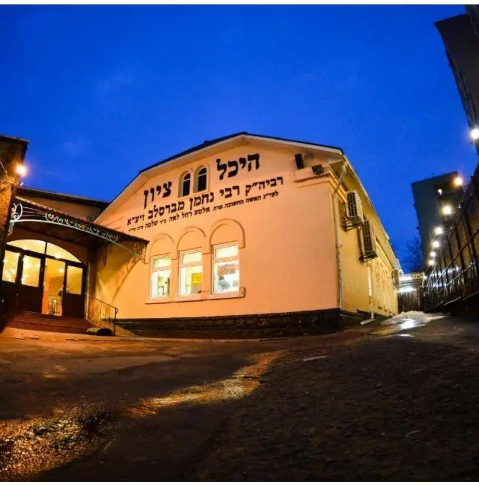
זה לא עוד טיול. זה מסע פנימי, בנחת ובלי לחץ, שמתחיל אצל הבעל שם טוב הקדוש במז'יבוז', ממשיך אל רבי נתן בברסלב, ומגיע אל רבינו הקדוש באומן, עיר הגעגועים.
לאורך הדרך: דיבורים מהלב, לימוד תורות רבינו, סיפורים, ניגוני נשמה, תפילות, מעגלי התבודדות, יוגה יהודית, הפרשת חלה ושבת אחת בציון, בחיבוק של קבוצה קטנה ואוהבת.
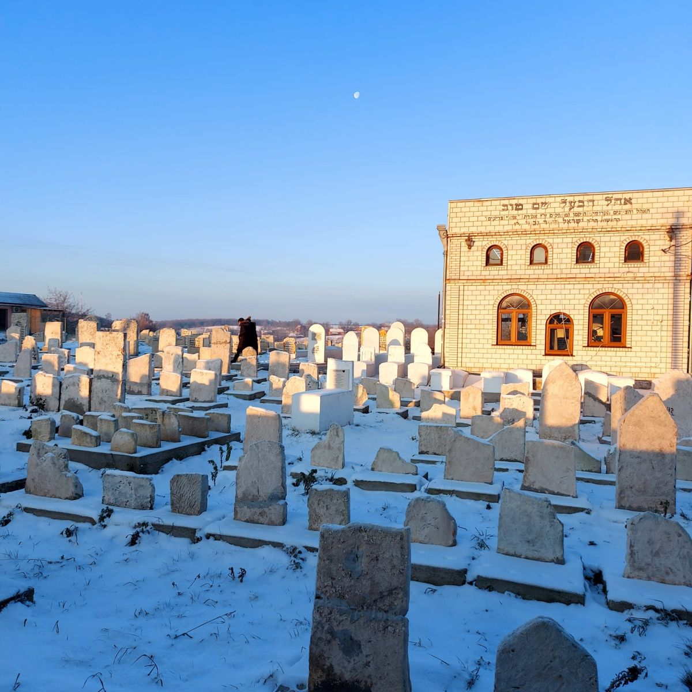
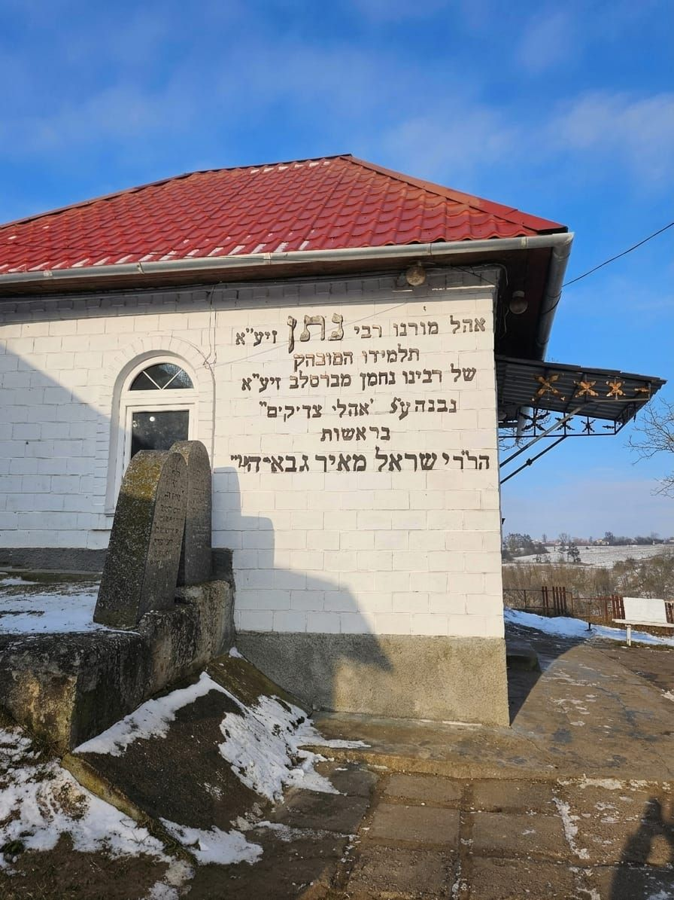
״ודע שהאדם צריך לעבור על גשר צר מאוד מאוד, והכלל והעיקר שלא יתפחד כלל.״
רבי נחמן מברסלבמהטיסה ועד הנחיתה, בין כ״ג לכ״ט חשוון (3–9 בנובמבר): מז'יבוז', ברסלב, אומן ושבת בציון.
כ״ג חשוון טיסה ונסיעת לילה
כ״ד חשוון מז'יבוז' · יום ולילה אצל הבעש״ט
כ״ה חשוון ברסלב ואומן
כ״ו חשוון אומן · ערב שבת
כ״ז חשוון תפילות, סעודות ושירים בציון
כ״ח חשוון גן סופיה והתבודדות
כ״ט חשוון חוזרות הביתה
והכל בעזרת השם. שינויים ותוספות בתוכנית יתכנו בהתאם לנסיבות. בעז״ה מפגש הכנה והיכרות יתקיים בזום ביום רביעי, י״ז חשוון (28.10) בשעה 20:00.
רגעים מהדרך, וגם מה אומרות מי שכבר נסעו.
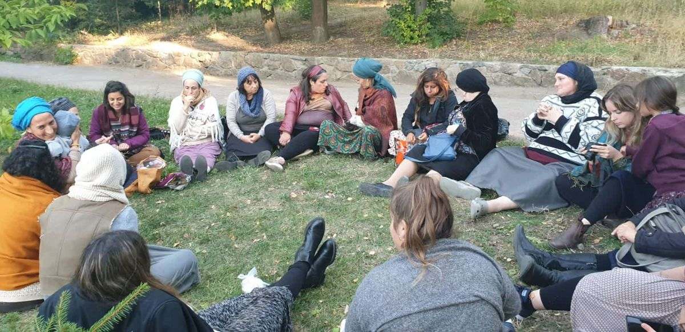
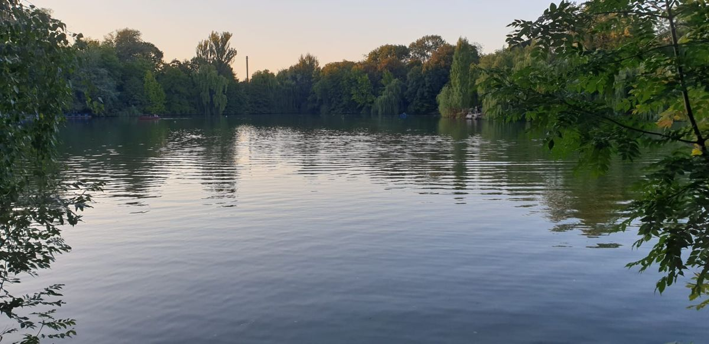
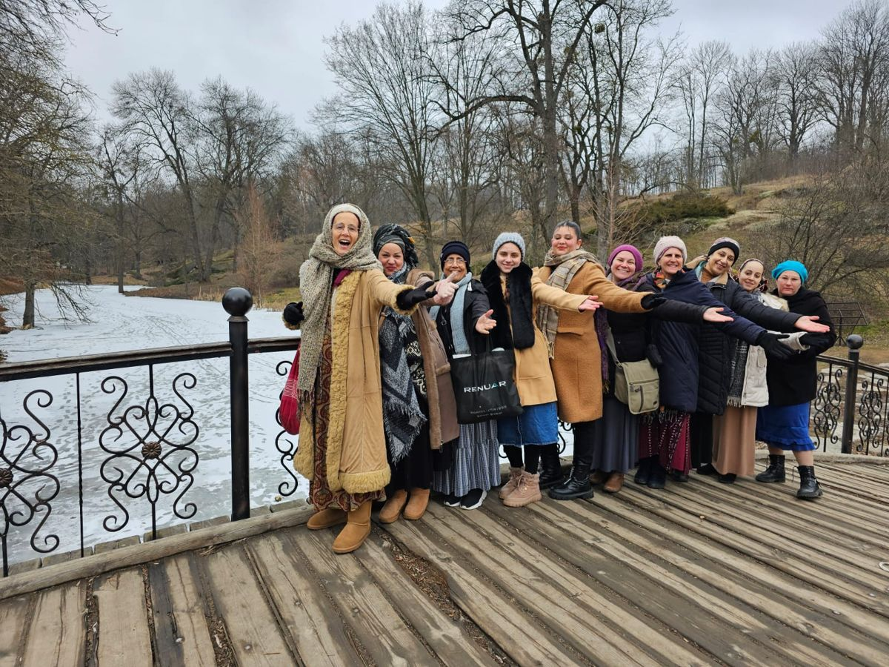
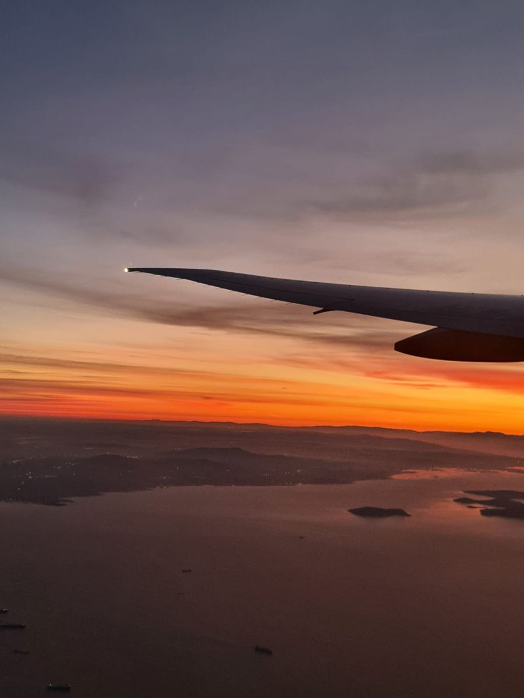
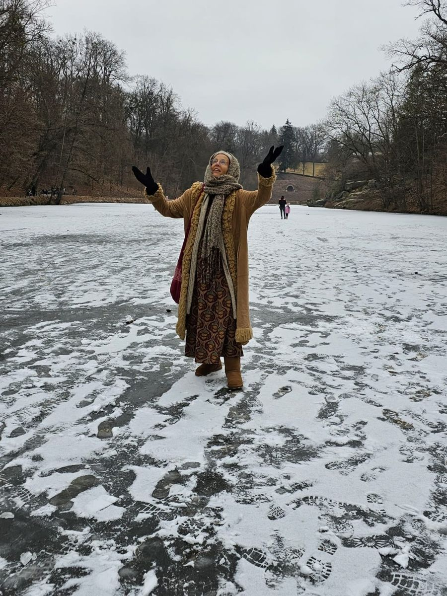
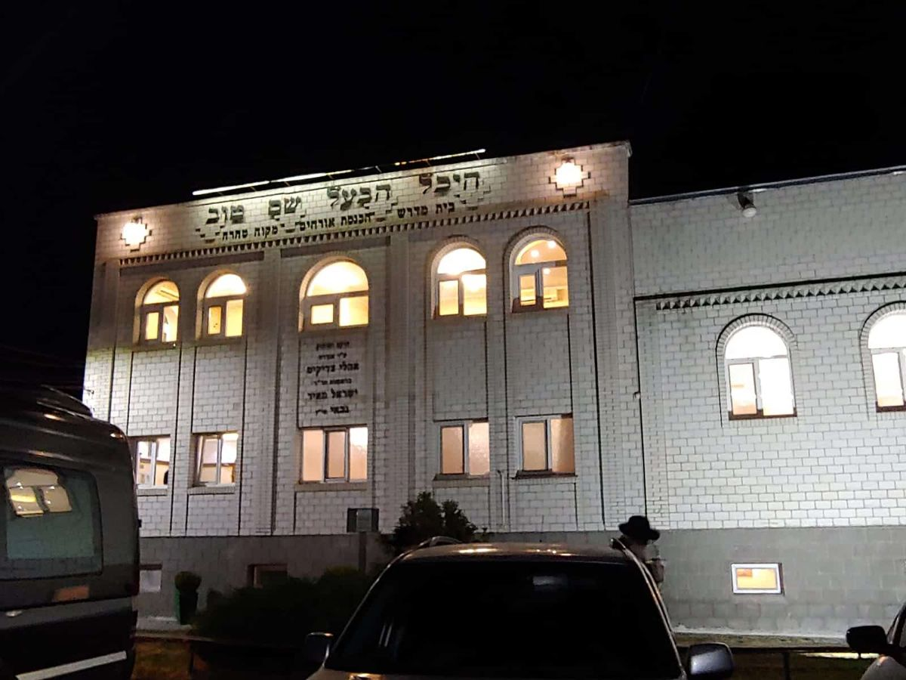
את באה להתפלל. את כל מאחורי הקלעים אנחנו מנהלות.
הלוך וחזור, יחד עם הקבוצה.
בלעדי לקבוצה, וקרוב לציון.
ארוחות עשירות ושפע, כולל סעודות שבת.
נסיעות בדרך בנוחות, כולל נסיעת הלילה.
דיבורים מהלב ולימוד תורות רבינו.
ניגוני נשמה, תפילות ומעגלי ריקוד.
עם אמונה, גם הפרשת חלה וסדנת אשירה תרפיה.
מעגלי התבודדות וחופש לעצמך.
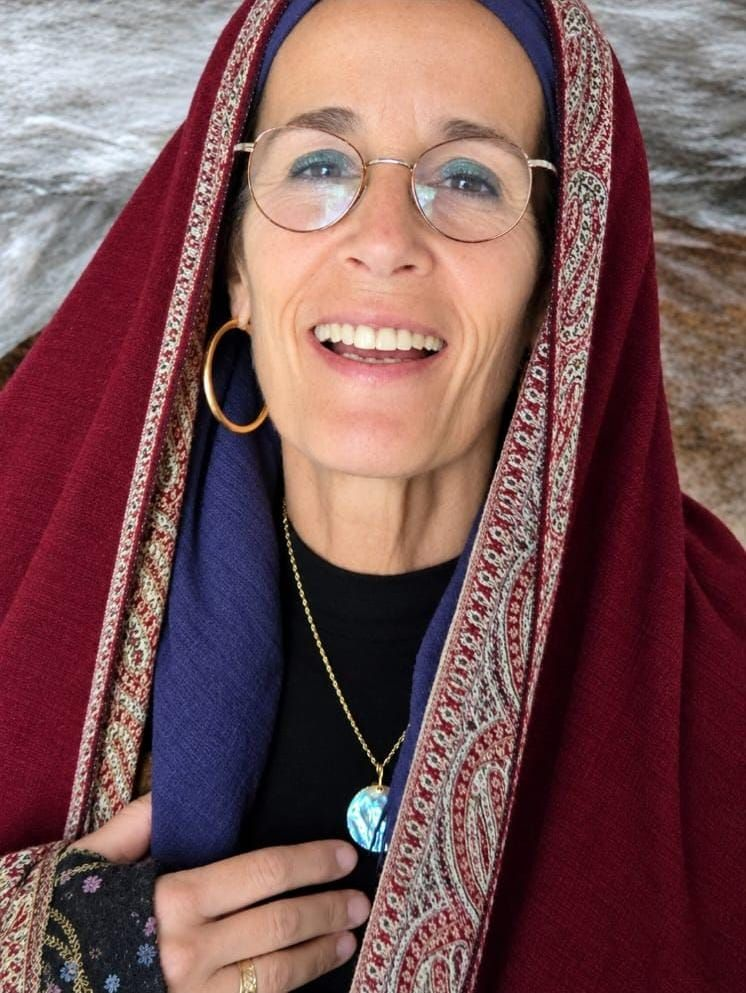
מלווה קבוצות נשים לאומן שנים רבות. מובילה את הקבוצה באהבת ישראל, בדיבורים מהלב ובלימוד תורות רבינו, ודואגת לכל פרט בדרך כדי שתוכלי רק להתפלל.
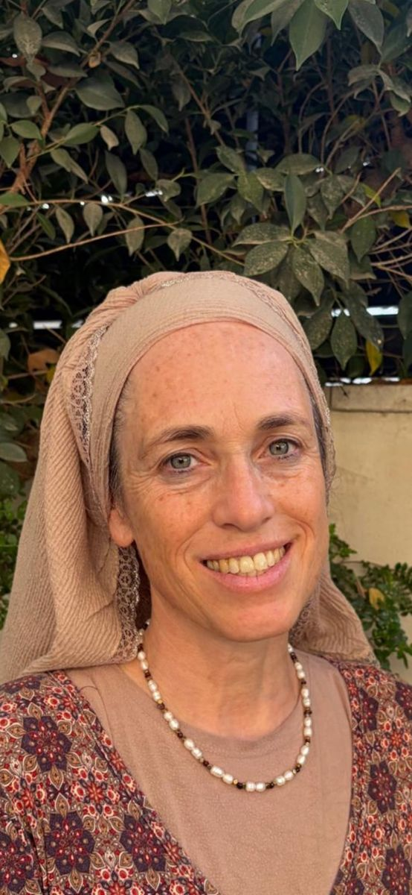
מלווה את המסע בניגונים לאורך כל הדרך, ומעבירה יוגה יהודית, הפרשת חלה וסדנת אשירה תרפיה.
במילה אחת – אורות!!! הבדל שמים וארץ נסיעה בקבוצה לנסיעה אישית לבד. התוכן, החוויה המשותפת, השיח שנוצר, פתיחת הלב, הצחוק, הדמעות… חוויה לנפש!!
להגיע לאומן עם תמרה זאת חוויה בלתי נשכחת. הרוגע, השקט, הידע שהיא מוסרת לפני כל הגעה לצדיק. הזמן להתפלל ללא לחץ, מדהים!
מהרגע הראשון ועד הנחיתה בארץ הרגשתי שיש על מי לסמוך. הדאגה לכל פרט, הליווי הצמוד, הרוגע ששידרת והאווירה המיוחדת שיצרת בקבוצה.
תמרה אשד מובילה את הנשים בקבוצה בהמון אהבת ישראל, ממש בחיבוק, ואמונה מוסיפה ניגוני נשמה לאורך כל הדרך.
שלחי לנו הודעה בוואטסאפ ונחזור אלייך עם כל המידע. המקומות מוגבלים.
שלחי הודעה ונחזור אלייך עם כל הפרטים ונשמור לך מקום במסע.
להרשמה בוואטסאפ שאלות על המסע? וואטסאפ לתמרהלהרשמה: תהילה 054-2661148 · לשאלות: תמרה 052-7960496
הטיסה כבר קרובה, והמקומות אוזלים.